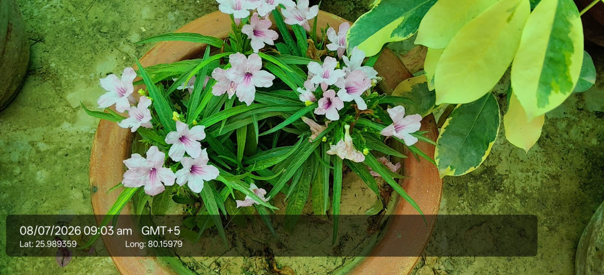

Also known as: Mexican Petunia / Britton's Wild Petunia / Desert Petunia

Scientific name
Ruellia simplex
Family
Acanthaceae
Category
Shrubs
Habitat & Growing Conditions
Native to Mexico, Caribbean, and South America. Widely naturalized and cultivated across India
Very common in UP including Kanpur area at your coordinates. Grown in pots, garden borders, and roadsides like in your photo
Thrives in tropical to subtropical climate
Needs well-drained soil and full sun to partial shade. Very drought and heat tolerant
Grows 0.5-1 m tall. Leaves are long, narrow, lance-shaped, opposite. Flowers are trumpet-shaped, 5-petaled, light pink with darker pink throat. This matches your photo - pink flowers with long slender leaves in a terracotta pot
Economic Importance
Ornamental: Very popular bedding and potted plant. Blooms almost year-round in warm climates. Low maintenance and attracts butterflies and bees
Good ground cover. Helps in soil stabilization and erosion control
Commercial: High demand in nursery trade. Easy to propagate from seeds and stem cuttings
Medicinal Importance
In traditional medicine, leaves and roots used for fever, inflammation, and wound healing. Note: Consult a healthcare professional before medicinal use